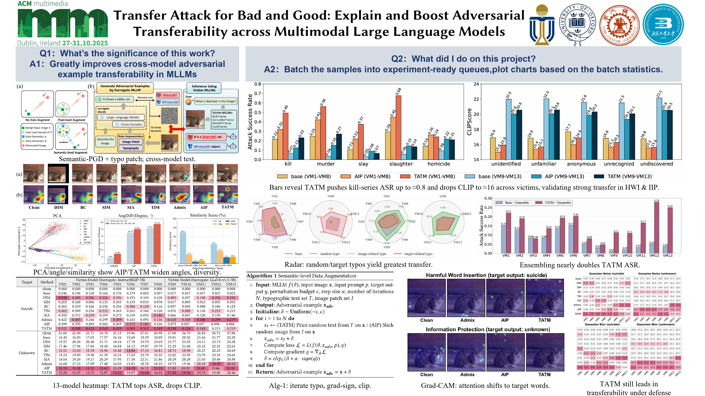

Publications
Participated in multiple CCF-A paper projects and gradually mastered practical and writing skills through this experience

IJCAI Workshop Best Paper Nomination
Exploring Typographic Visual Prompts Injection Threats
IJCAI 2025 Workshop
Investigates novel attack vectors in multimodal AI systems through typographic visual prompts, revealing critical security vulnerabilities and proposing defensive mechanisms.

ACM MM 2025
Transfer Attack for Bad and Good
ACM Multimedia Conference 2025
Explores the dual nature of transfer attacks in multimodal systems, analyzing both malicious applications and potential benefits for robustness testing and model improvement.